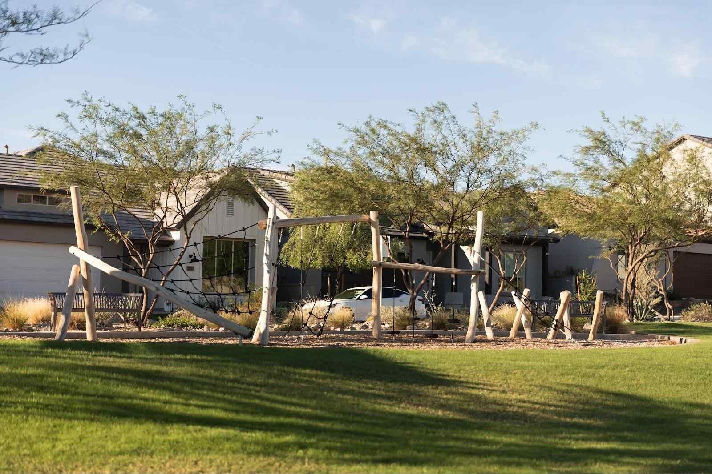

Landscape Management
Keep it looking like day one.
Mowing is the easy part. Our Landscape Management program treats your property as one connected system: we walk it, plan it, work it, check it, and tell you what we found. Problems get caught small.

Five things we do for your property
Pick one, or let us run the whole thing.
- Inspect
- Plan
- Execute
- Verify
- Communicate
The job isn't to finish the checklist. It's to leave the property better than last week.
The people whose names are on it
Robert Clinkenbeard
Built a landscape maintenance business to more than 500 accounts, along with a multi-million-dollar tree division.
Jayson Gonzales
Leads Landscape Management, with experience across master-planned HOA maintenance and enhancements.
Nathaniel Archambeau
ISA Certified Arborist, ACLP, ACIT and SLM. Leads Fairco's water program.

You'll hear from us before you have to ask.
Here's how we keep you in the loop.
Daily communication
A daily check-in with your on-site supervisor and account manager. Small stuff gets handled on the spot.
Executive dashboards
A landscape health dashboard with at-a-glance visibility into water usage, ET variance, repairs completed, quality scores and upcoming priorities.
Transparent reporting
Reports on a set schedule that say what we did, what's in progress and what's next. No filler.
QR code verification
Tagged locations let your staff scan and independently verify inspection details and service history.
Resident engagement
A resident newsletter, seasonal landscaping tips and education classes that keep residents informed and connected.
Proactive updates
If we see something coming, you'll know about it before it costs you money.
Good tools. Better crews.
We use technology where it helps the crew do better work and helps you see what's going on. Nowhere else.
The tools don't do the work. They help good people do more of it.
What we're looking after
Your landscape, your water bill, your residents and the money you've already put in the ground. We treat all of it like it's ours.

- Landscape asset performance
- Water & irrigation infrastructure
- Plant, tree & turf health
- Community appearance & value
- Safety & risk mitigation
- Long-term capital investment
- Community experience
Good landscape management sees it coming.
Let's talk about your property.
Tell us what you've got and what's bugging you about it. We'll come take a look and give you a straight answer.